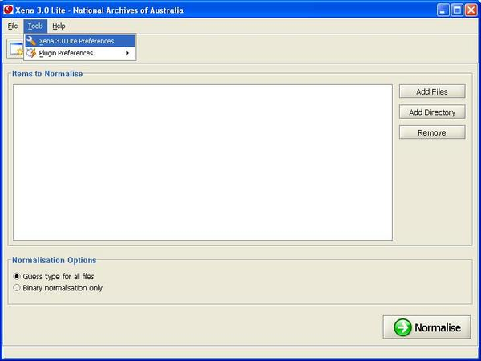
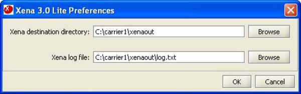

To configure Xena Lite to use the correct plugins, select Tools -> Xena Lite Preferences from the main menu.

Use the Browse button to open a file browser and navigate to the location of the Xena Lite plugins directory.

The Preferences box may also be used to set a location for Xena Lite to save converted files and to set a location for Xena Lite to save a log file. Neither of these is essential to the operation of Xena Lite, so their setting is optional.